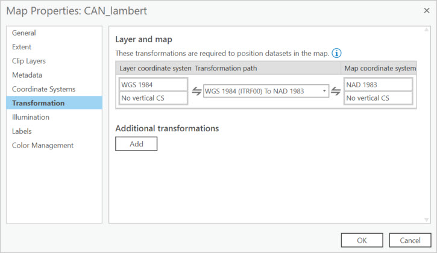

Exercise 2: Projecting on the Fly
1 From the same project in ArcGIS Pro, click on the the Canada Lambert tab representing a different map.
Notice the difference in how the default topographic basemap appears in the previous map compared to this one.
2 Open the properties of the dataset to see what the coordinate system is.
The Lambert Conformal Conic Projection has characteristics which make it a good possible choice for maps of Canada.
- Offical projection used by Statistics Canada
- Retains conformality in mid-latitude regions having primarily an east-west direction
- Not equal area because distortion increases north and south of the standard parallel (line at which there is no distortion in the map projection)
3 Navigate to the Catalog Pane on the right of your map.
- If it is not visible, click on the View tab at the top of the screen and select Catalog Pane from the ribbon menu.
4 From the Catalog pane, expand the mapProjections>mapProjections.gdb, and add the CAN_WGS1984 feature class to the map by dragging it into the Contents pane on the left.
Even though you added a feature class which is in a geographic coordinate system, the feature class gets projected “on-the-fly” to match the coordinate system of the map, which in this case is in a projected coordinate system.
ArcGIS Pro chooses a transformation between these two different kinds of coordinate systems that will project the data from one datum to another. You can view the transformations used in the Map Properties by right-clicking on the map name under Drawing Order in the Contents and then clicking on the Transformation section.

A transformation is a mathematical calculation used to convert coordinates referenced to one datum to coordinates referenced to another datum.
You can see that these two datasets seem to line up perfectly and the units in the lower centre appear as meters.
But projecting on-the-fly does not change the underlying data properties.
5 Open the properties of the CAN_WGS1984 to confirm the coordinate system properties.
Taking advantage of on-the-fly projection is okay for visualizing data within the same map.
If you want to do any kind of analysis based on area with your data, you will want to change the projection properties.
We’ll go over how to do this in the next exercise.
See additional information on transformations.